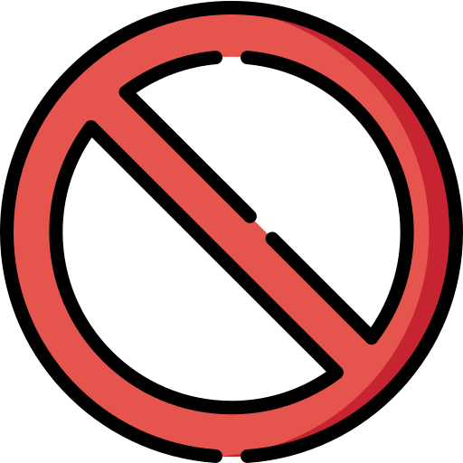

<ion-header >
  <ion-toolbar>
    <div class="header-servicios">
      <button class="cerrar-modal" (click)="cerrarModal()">
        <ion-icon name="close"></ion-icon>
      </button>

      <ion-title>Todas las reglas</ion-title>
    </div>
  </ion-toolbar>
</ion-header>

<ion-content>
  <ion-item *ngFor="let regla of reglas">
    <ion-thumbnail slot="start">
      
    </ion-thumbnail>
    <ion-label>{{regla.nombreRegla}}</ion-label>
  </ion-item>
</ion-content>
